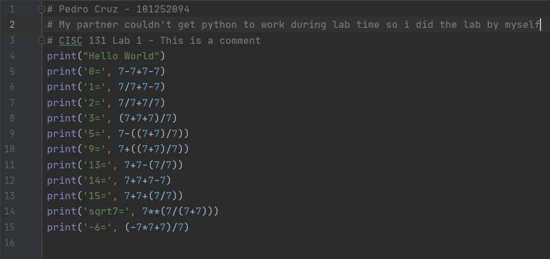
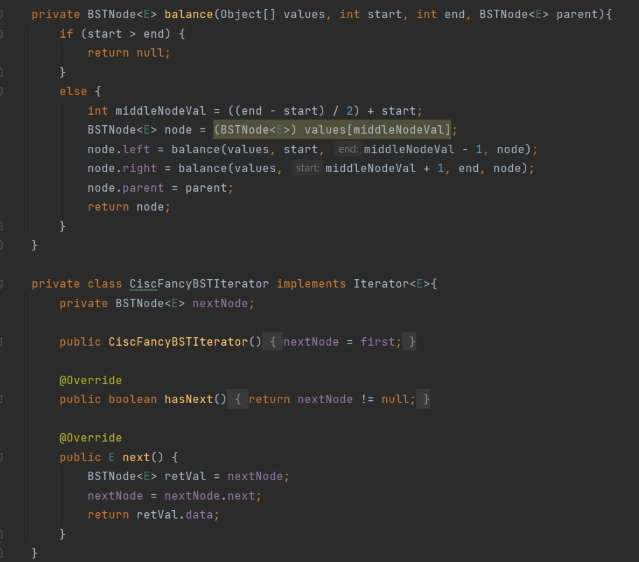
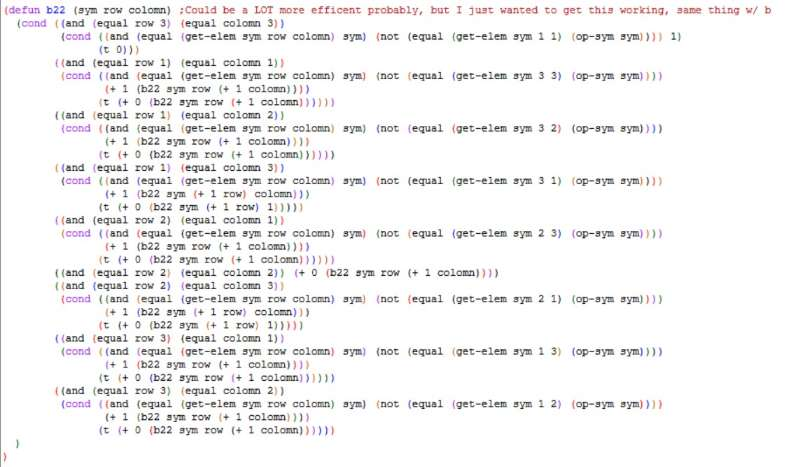

Now, for a bit of honesty, I haven't really done any projects in my freetime. All
the projects on this list are going to be assignments from clases I've taken, but that doesn't mean that I'm
any less proud of what I've accompleshed so far during my time so far here at St. Thomas.
Now, I know that this project may not look like much, and that's because it
really isn't, but I decided the the best thing to start off with would be my very first lab assignment that
I had. This project was my very first expeirience with coding and will always hold a special place in my
heart because of that.

For the second project, I chose the final assignment of CISC 231, the self
balancing binary search tree that we made. I decided on this lab not only becasue I really enjoyed 231,
but also becasue I thought that the idea that we can make a tree that automatically balances itself was
really cool at the time and it was really fun to figure out how to implement that. Shown in the image is
the balance method and the tree's iterator.

For the final project, I'm choosing one of the assignment that I commited the
most amount of time to getting finished, which is the 4th assignment from CISC 440 AI and Robotics. I
pulled an all-nighter to get this assignment done, working on it for about 12 hours straight (not including
the occasional break to think, rest, or eat). The assignment itself is a game of tic-tac-toe that has an ai
opponent that will always make the most optimal move to counter you. It was written in LISP and the image
shows one of the four funtions used by the ai to find the best move possible.

I have a few projects that are either in progress or will be happening this semester
in other classes. The two that I'm most excited about are the two games that I am going to be making in
DIMA 246, Game Design. The other is a personal project that I am going to be slowly working on over this
semester using the skills I learn in this class to make a website. I also hope to start working on a game
of my own over J-term so I can hopefully get it finished by the time graduation rolls around!